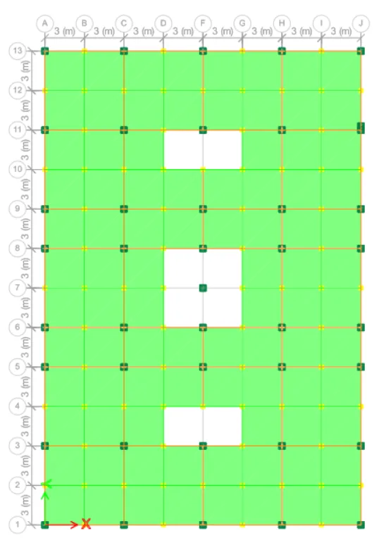
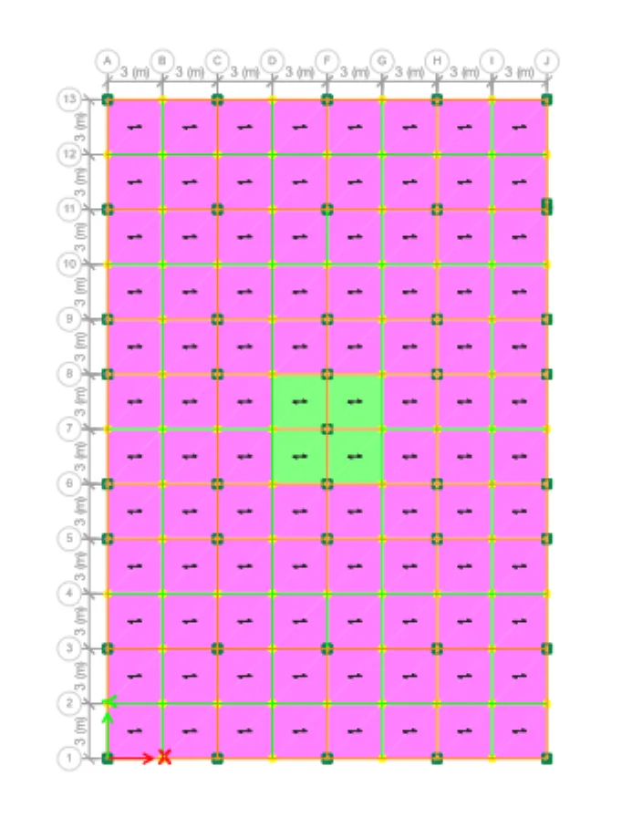
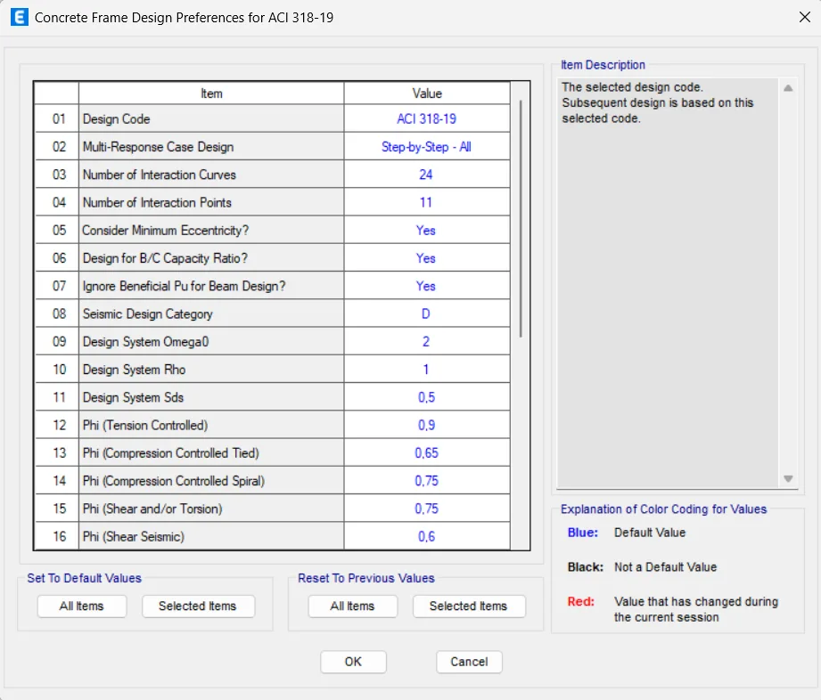

Model ETABS gedung asrama mahasiswa
Memodelkan gedung asrama mahasiswa bertingkat di ETABS: penampang kolom, balok, dan pelat, faktor kekakuan retak, diafragma lantai, lalu desain elemen beton dengan kode ACI 318-19.
- Acara atau tempat
- Tugas besar Dinamika Struktur, Universitas Jambi
- Tahun
- 2026
- Peran saya
- Anggota kelompok (12 orang).
- Hasil
- Model 3D rangka beton, desain ACI 318-19
- Perangkat lunak
- ETABS, AutoCAD
- Jenis
- Pemodelan, Perhitungan
Model dan pengaturan desain
- Faktor reduksi kekakuan penampang retak (kolom 0,70 Ig, balok 0,35 Ig, pelat 0,25 Ig) dimasukkan sebagai property modifier.
- Pelat dimodelkan shell-thin dengan diafragma tiap lantai; bukaan lantai mengikuti denah.
- Rangka pemikul momen khusus (sway special) dengan kode desain ACI 318-19, lalu tulangan lentur, geser, dan torsi dibaca dari keluaran desain.






